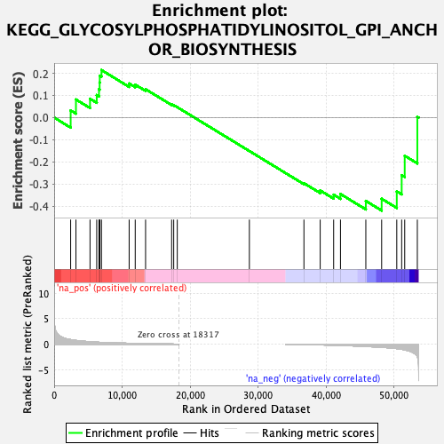
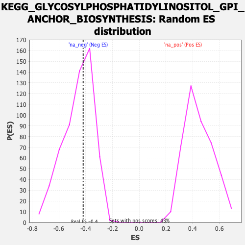

| | | Dataset | prerank |
| Phenotype | NoPhenotypeAvailable |
| Upregulated in class | na_neg |
| GeneSet | KEGG_GLYCOSYLPHOSPHATIDYLINOSITOL_GPI_ANCHOR_BIOSYNTHESIS |
| Enrichment Score (ES) | -0.41915226 |
| Normalized Enrichment Score (NES) | -0.91812396 |
| Nominal p-value | 0.56790125 |
| FDR q-value | 1.0 |
| FWER p-Value | 1.0 |
Table: GSEA Results Summary

Fig 1: Enrichment plot: KEGG_GLYCOSYLPHOSPHATIDYLINOSITOL_GPI_ANCHOR_BIOSYNTHESIS
Profile of the Running ES Score & Positions of GeneSet Members on the Rank Ordered List
| SYMBOL | RANK IN GENE LIST | RANK METRIC SCORE | RUNNING ES | CORE ENRICHMENT | | 1 | PIGH | 2427 | 0.898 | 0.0324 | No |
| 2 | PIGP | 3206 | 0.738 | 0.0817 | No |
| 3 | PIGC | 5279 | 0.486 | 0.0851 | No |
| 4 | PIGN | 6265 | 0.403 | 0.1016 | No |
| 5 | GPAA1 | 6596 | 0.376 | 0.1279 | No |
| 6 | PIGO | 6691 | 0.367 | 0.1578 | No |
| 7 | PIGK | 6711 | 0.366 | 0.1891 | No |
| 8 | PIGB | 6964 | 0.347 | 0.2144 | No |
| 9 | PIGZ | 11038 | 0.177 | 0.1537 | No |
| 10 | PIGS | 11932 | 0.133 | 0.1486 | No |
| 11 | PIGQ | 13456 | 0.091 | 0.1281 | No |
| 12 | PIGT | 17291 | 0.038 | 0.0599 | No |
| 13 | DPM2 | 17599 | 0.024 | 0.0563 | No |
| 14 | PIGF | 18122 | 0.006 | 0.0471 | No |
| 15 | PIGY | 28735 | 0.000 | -0.1508 | No |
| 16 | PIGV | 36768 | -0.055 | -0.2959 | No |
| 17 | PIGL | 39160 | -0.137 | -0.3286 | No |
| 18 | PIGG | 41140 | -0.206 | -0.3477 | No |
| 19 | GPLD1 | 42144 | -0.252 | -0.3446 | No |
| 20 | PIGW | 45877 | -0.445 | -0.3757 | Yes |
| 21 | PIGU | 48206 | -0.615 | -0.3660 | Yes |
| 22 | PIGA | 50433 | -0.866 | -0.3326 | Yes |
| 23 | PIGM | 51154 | -1.000 | -0.2596 | Yes |
| 24 | PIGX | 51602 | -1.111 | -0.1719 | Yes |
| 25 | PGAP1 | 53459 | -2.432 | 0.0037 | Yes |
Table: GSEA details [plain text format]

Fig 2: KEGG_GLYCOSYLPHOSPHATIDYLINOSITOL_GPI_ANCHOR_BIOSYNTHESIS: Random ES distribution
Gene set null distribution of ES for KEGG_GLYCOSYLPHOSPHATIDYLINOSITOL_GPI_ANCHOR_BIOSYNTHESIS